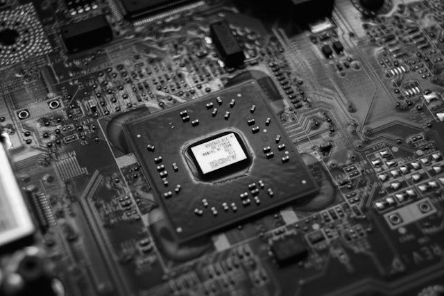
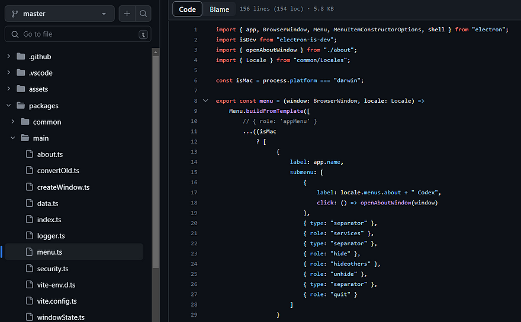
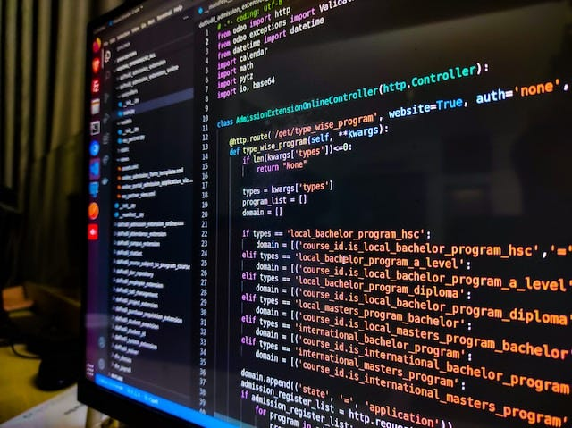
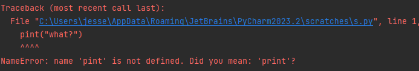
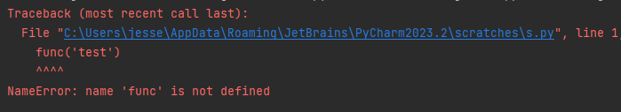
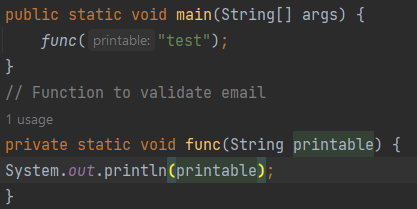

You will always see the most benefit by first mastering the fundamentals of a craft.
In all fields and practices the fundamentals are the most transferrable pieces of knowledge for all parts of a craft. Fundamentals are the essential building blocks of a topic, which is why they are called fundamentals or foundational to future progress.
I will be overviewing key concepts one at a time by terminology in order of requirement.
We will go over 19 concepts, quickly.
I go through it from its most real perspective and not in the same way a boot camp would.
This should help take a lot of the mysticism out of programming.
Binary number
Binary numbers are the number system computers run off of.

The reason computers use binary numbers is to count 0s and 1s as electrical signals off and on.
This makes all math simple in a computer as all we need is a series of 1s and 0s to represent all math.
Here are some representations of binary numbers:
- 12 is 1100
- 13 is 1101
- 20 is 10100
- 40 is 101000
- 80 is 1010000
- 100 is 1100100
A series of numbers are used this way to add, subtract, divide, etc.
Abstraction
Abstraction is why code exists. It means to take something specific and make it mean something more broad.

The abstraction of a cat is an animal. An abstraction of an animal is a species. An abstraction of a species is a living organism.
We get more and more broad and each one means the other. So it is the same with computers.
Our computer screens are an abstraction of binary math being done inside the hardware.
We interpret and read the signs of this math and do mighty things while never knowing the binary changes being done on the CPU.
System Clock
There is an electrical loop, a rhythm, a beat, also known as a clock running inside all your electrical devices.
Electricity runs on a loop going through your entire computer.
From the power supply, or the plug into your wall, an electric current runs into the motherboard then to every device bringing life to all the hardware.
The number of loops your hardware goes through is known as a GHz. This is a rate of a billion electrical loops going through your hardware per second.
1 GHz is 1 billion electrical loops through all your hardware per second. 2 GHz is 2 billion per second.
For every loop the electrical current goes through transistors and switches in a series of on and off signals order how the hardware produces electricity.
These on and off signals are 0s and 1s.
The system clock is the heart rate of your computer. The electric current ticks in the billions per second as the blood.
CPU
Central Processing Unit, has math abilities built into the hardware so that we can abstract the math using code.

Most modern CPUs have 100s to 1000s of built-in math functions that code abstracts for developers and users.
As a system clock goes into the CPU, signals are turned off and on based on the built-in math.
The input is a series of bits streaming from the system clock and the output is math done on the bits from the CPU.
Here are some built-in math functions which are used on the binary numbers 0s and 1s as examples:
- Addition
- Subtraction
- Multiplication
- Division
- Square root
- Exponent
- Logarithm
- Trigonometric functions
- Many more etc.
Transistor
This is the core of computation.
Transistors allow logic of the off and on signals to store different series of numbers in memory.
All built-in math functions of your CPU are an abstraction of the following:

These are gates from binary numbers which when put together in complex series of transistors to make a built-in math function.
Like this:
That is what a built-in math function on the CPU would look like but much more complex as a series of hardware built-in transistors inside the CPU.
Map
A direct association between an address and memory.
So, "hello" may result in 52 and an address like 10110 may result in 15.
Mapping is a fundamentals type of memory in computers.
Here is an example of a map:
Key maps to value.

So if we ask for "key" we get "value".
"Address" gives us "result" and "adress2" gives us 101110.
Memory
All computer hardware which holds memory accepts a series of binary numbers as addresses.

Then from those series of addresses outputs the binary bits as memory.
It is a map of address to bytes of data which store information for the computer.
All computer memory works on mapping address to bytes of memory this way.
A series of read addresses are brought in from the system clock and the output is a stream of memorized bits from those addresses.
RAM
Random Access Memory is a specific hardware which holds binary addresses mapped to series of bytes.
The majority of hardware in you computer accesses memory through RAM.
In addition most programs are stored in RAM while they run.
This includes your Operating System.
RAM is wiped every restart.
Programming language
A programming language dictates a series of built-in math operations in your hardware.
But the series you are coding up as a developer are abstracted so much you use programming languages to order these built-in maths.
Printing "hello" in Python has such a ridiculous amount of built-in math inside it, it would make your eyes boggle.
But our ancestors have created a system which allows such abstraction we can call all all this math with the simple "print" keyword.
We do this with programming languages to the point we are orchestrating the computer to do mighty things.
These things are done with minimal effort and easily digestible code.
Code source
This is what we consider to be software.
A code source is a series of instructions to your computer run live on your hardware.
It is written in a programming language which both you and your computer understand.
It is saved as bits and shared between many peoples.
Software
Everything not built-in to the hardware itself would be considered software, including your operating system.

Software is any abstraction of built-in math functions in the hardware. It is a code source.
It is software because it exist in-memory as binary bits and not as a physical device or hardware.
If you wipe all stored bits on your device, all software will disappear and all hardware would remain.
This is what makes it "soft".
All software is stored as 0s and 1s and uses built-in math functions.
The two components of software are the storage needed and the code needed.
Code dictates how the built-in math functions manipulate 0s and 1s in-memory.
All software requires code.
The storage holds existing 0s and 1s needed for the software to abstract your hardware enough.
This is to show these binary numbers as lets say the blog you are looking at, or the operating system you are running on.
Computer Science
The study of the interrelation of man and machine. How can humans interact with machines? What is their experience? How do we create an experience?
These are the questions we ask as a computer scientist.
We essentially build software for man and study how to use hardware already built.
Compilation
Because there is an abstraction of bits to a programming language, language must be converted to readable bits by the computer.
These readable bits are known as an executable.
Something which can readily be executed by the computer.
This conversion is compilation.
Your code is being compiled into readable bits and placed separately in memory from your code.
You can then run your compiled bits as a binary file.
It is called binary file because it is a series of 0s and 1s.
In Windows we call this an executable or .exe.
Code errors
You have imagined a software to be run.
If it does not run as intended, this is known as a code error.
Either something you wrote in the code does not match your logic.
Or the underlying programming language, compiler or other factors into writing your code are misaligned.
Code environment
A code environment is the natural habitat of your code.
This is all parts which affect the code but are not directly the code.
All these parts that form around the code are the environment.
Lets look at some examples of things which are part of the code environment:
- Operating system
- IDE
- Files in your project
- The structure of your folders
- The dependencies for your project
- The build tool
- Programming language version
- The shell language you are running, bash, powershell, etc.
- Etc.
Syntax error
Each programming language has a structure to it.
A specific ordering of keywords or required format of characters.
If for example in Python you were to type out pint instead of print there would be a syntax error such as this one...
Any misspellings, lack of spaces or characters would be a syntax error because you are not following the language.
Compile-time
While your code is being converted to instructions in bits it takes a little time from start to end to convert your code.
During this time is considered compile-time.
Code errors show up and are known as compilation errors.
Syntax errors, environment errors and many other errors do show up at compile-time.
Runtime
While a code source AKA software is running on the computer it is streaming through the system clock.

It runs through the blood cycle of the hardware and is being accessed through the CPU into the RAM and hardware.
When a software is alive like this.
When it is in-action.
We call this run-time.
Interpreter
An interpreter compiles code line by line top to bottom then runs each line individually.
It is a live compilation then run at every part of the code.
This is also known as scripting.
By default Python runs like this.
When a language is being interpreted it is run top to bottom.
Line 1 is run first all the way to line 5.
The instructions bits do not know what goes after it.
Any language can be put into interpretation format or compilation format.
In an interpreted format the function below would not run...
I get not defined.
However in compilation we do get that function...
This is because compilation goes through the entire code source and makes mappings to all parts of the code before it runs.
While interpreters go line by line converting to machine code, then running that individual line of machine code, compilers save everything in maps then runs it all.
Interpreters also store all previous lines of course so future machine code works.
Anywho, I hope you learned something...
Happy coding!
Resources
Why fundamentals are important: Why Coding Fundamentals Are Important & Questions You Should Be Asking
What is Computer Science: A Short and Insightful Answer: What is Computer Science?